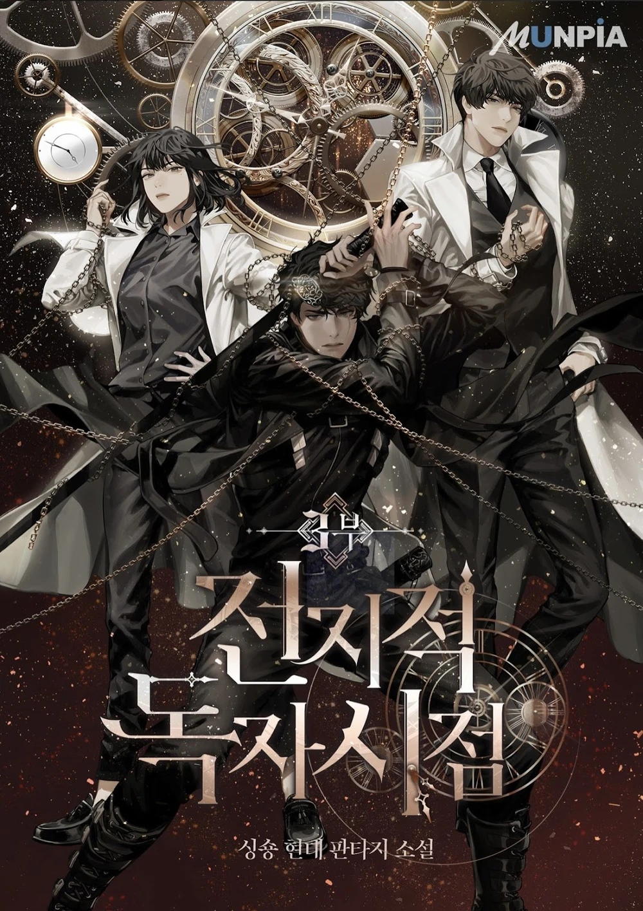

OMNISCIENT READER'S VIEWPOINT
really good manhwa and novel you should read
Dokja was an average office worker whose sole interest was reading his favorite web novel 'Three Ways to Survive the Apocalypse.' But when the novel suddenly becomes reality, he is the only person who knows how the world will end. Armed with this realization, Dokja uses his understanding to change the course of the story, and the world, as he knows it.
you get two guys who are life and death companions and not gay
and han sooyoung... we like her
look at them :D
but also look at:
best boy :D